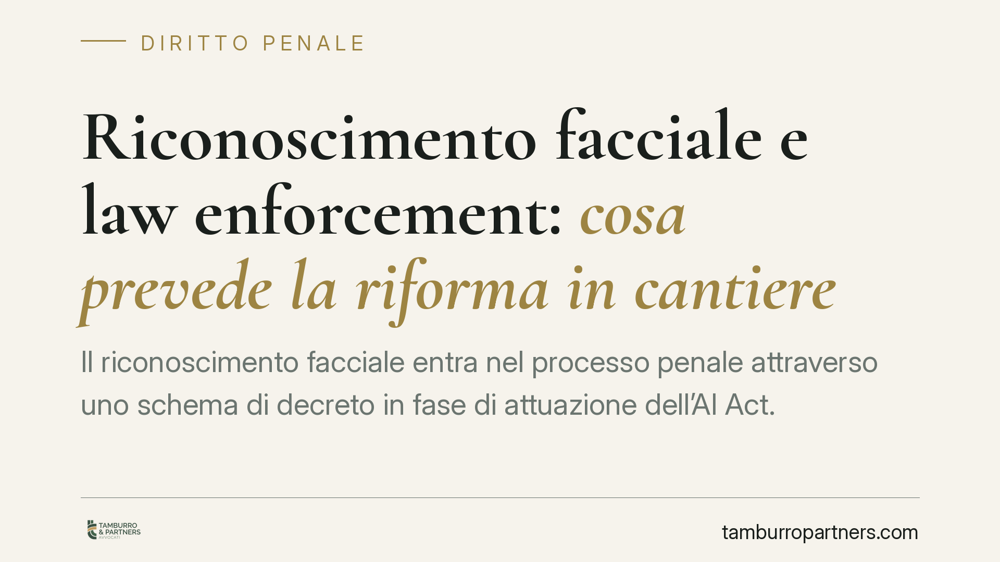

Riconoscimento facciale e law enforcement: cosa prevede la riforma in cantiere
Il riconoscimento facciale entra nel processo penale attraverso uno schema di decreto in fase di attuazione dell'AI Act. Si delinea un doppio binario tra uso preventivo e investigativo, con controllo dell'autorità giudiziaria. Il quadro non è ancora consolidato: per la difesa conta capire da subito come contestare l'impiego irregolare di questi sistemi e la loro utilizzabilità.

Di cosa parliamo
L'identificazione biometrica remota — comunemente "riconoscimento facciale" — consiste nel confronto automatizzato di volti ripresi da telecamere con banche dati, per identificare persone a distanza. È una delle tecnologie più sensibili sul piano dei diritti fondamentali, perché opera spesso su soggetti ignari e in spazi pubblici.
Avvertenza redazionale. Il quadro normativo interno è, allo stato, in via di definizione. Il decreto legislativo di attuazione (indicato nella fonte come d.lgs. 160/2026) e il nuovo articolo del codice di procedura penale che ne deriverebbe (indicato come art. 359-ter c.p.p.) non risultano, al momento della redazione, riferimenti vigenti e verificabili su Gazzetta Ufficiale. Li trattiamo perciò come contenuti dello schema di riforma, da confermare su fonte ufficiale prima di ogni utilizzo processuale. La data di entrata in vigore va parimenti verificata.
Il contesto europeo: cosa dice davvero l'AI Act
Il riferimento sovranazionale è il Regolamento UE 2024/1689 (AI Act). Qui serve una distinzione tecnica che spesso viene confusa.
L'art. 5 dell'AI Act riguarda le pratiche vietate. L'identificazione biometrica remota "in tempo reale" in spazi accessibili al pubblico, a fini di attività di contrasto (law enforcement), rientra tra le pratiche in linea di principio vietate, salvo eccezioni tassative (ad esempio ricerca di vittime, prevenzione di minacce gravi e imminenti, individuazione di autori di reati gravi), subordinate ad autorizzazione e a garanzie stringenti.
Diverso è l'uso post-remoto, cioè differito rispetto ai fatti: questo non rientra nel divieto dell'art. 5 ma nella categoria dei sistemi ad alto rischio disciplinata dall'Allegato III, con obblighi di conformità e supervisione ma senza il regime del divieto con eccezioni.
In sintesi: *real-time* in spazi pubblici = pratica vietata con eccezioni (art. 5); uso differito = alto rischio (Allegato III). È una distinzione decisiva, perché cambia il perimetro delle garanzie e i motivi di contestazione.
Il doppio binario nello schema interno
Secondo lo schema di decreto, il legislatore italiano recepirebbe le eccezioni consentite dall'AI Act costruendo un doppio binario:
- un uso preventivo, riconducibile all'attività di sicurezza pubblica (con un ruolo del questore e della polizia giudiziaria);
- un uso investigativo, all'interno del procedimento penale, sotto la direzione del pubblico ministero.
Il punto qualificante sarebbe il controllo dell'autorità giudiziaria: l'attivazione dello strumento richiederebbe l'autorizzazione del Procuratore della Repubblica o del Giudice per le indagini preliminari (GIP), con un meccanismo di convalida. Restano coinvolti, per i profili di protezione dati e sicurezza, il Garante per la protezione dei dati personali e l'Agenzia per la Cybersicurezza Nazionale (ACN).
Attenzione: il contenuto puntuale della disciplina processuale — chi autorizza, entro quali termini, con quali conseguenze in caso di violazione — è plausibile ma va verificato sul testo definitivo. Un'eventuale sanzione di inutilizzabilità delle prove raccolte in difetto di autorizzazione sarebbe la garanzia più rilevante per la difesa, ma non può essere data per certa finché la norma non è pubblicata.
Implicazioni pratiche
Per chi è sottoposto a indagine o processo, la questione non è astratta. Se un'identificazione biometrica ha contribuito a orientare le indagini o a costruire un capo di imputazione, diventa centrale ricostruire:
- quale tipo di sistema è stato usato (real-time o differito), perché il regime applicabile cambia;
- la catena autorizzativa, cioè se e da chi l'impiego è stato autorizzato;
- il rispetto dei presupposti che rendono lecita l'eccezione al divieto europeo.
Una prova ottenuta fuori dai casi consentiti espone, sul piano difensivo, a un'eccezione di inutilizzabilità e, sul piano sostanziale, alla contestazione dell'attendibilità del risultato biometrico, tecnologia non infallibile e soggetta a errori di riconoscimento.
Cosa fare in concreto
- Chiedete ostensione degli atti relativi all'impiego del sistema di riconoscimento: tipologia, banca dati interrogata, momento dell'utilizzo.
- Verificate la catena autorizzativa: individuate l'atto del PM o del GIP che ha legittimato l'operazione e i suoi presupposti.
- Qualificate l'uso (tempo reale o differito) per stabilire il regime applicabile tra art. 5 e Allegato III dell'AI Act.
- Valutate l'eccezione di inutilizzabilità in caso di impiego privo dei presupposti o dell'autorizzazione.
- Confermate le fonti normative su Gazzetta Ufficiale: numero del decreto, articolo del c.p.p. e data di vigenza prima di fondare su di essi una strategia.
Consigliamo di non attendere la fase dibattimentale per affrontare questi profili: la ricostruzione tecnica e la verifica delle autorizzazioni vanno impostate nelle prime fasi del procedimento.
---
Contributo informativo a cura di Tamburro & Partners - Avv. Giuseppe Tamburro. Non costituisce parere legale.
Ogni condominio ha una storia a sé.
Se gestisci un'amministrazione e vuoi un confronto su una specifica questione condominiale, scrivi allo studio. Ti rispondiamo entro un giorno lavorativo.